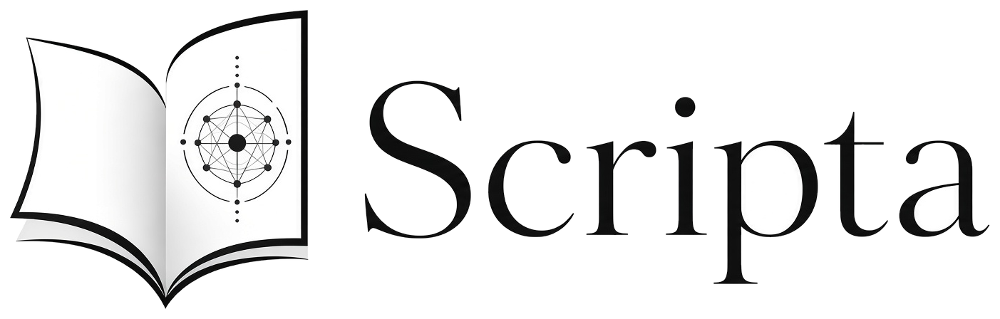

SEU CONHECIMENTO, CONECTADO
Conecte seu
Scripta.
Adicione sua chave de acesso para consultar a documentação e manter o contexto do seu projeto.
Pronto para conectar.
Como obter minha chave de acesso?
- Acesse sua conta no Scripta. Se ainda não tiver uma, solicite o acesso ao responsável pelo Scripta.
- Abra a área de Tokens de API. Ela está nas configurações da conta ou do projeto.
- Crie uma chave para esta conexão. Copie e guarde o valor: ele é exibido apenas uma vez.
- Confira o acesso ao projeto renew-it. Para consultar e atualizar a documentação, solicite a permissão de Editor ao responsável.
- Cole a chave acima e salve. Não compartilhe sua chave em conversas ou documentos.
Os nomes dos menus podem variar conforme a versão do Scripta. Se o projeto não aparecer, peça seu compartilhamento com a conta associada à chave.
Uma conexão privada com o conhecimento do seu projeto.